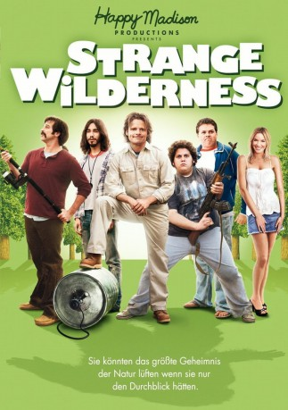

#11751 Strange Wilderness
 
 IMDB-Wertung: 5.3 / 10
IMDB-Wertung: 5.3 / 10  Tomatometer: 2
Tomatometer: 2  Metascore: 12
Metascore: 12 
Tierfilmer Peter hat ein blühendes Prime-Time-Fernsehformat zur mitternächtlichen Lachnummer herabgewirtschaftet und steht kurz vor dem Verlust der einst vom Vater geerbten Sendung, als sich die einmalige Gelegenheit zu einem Coup ergibt, der die Teammitglieder zu einer letzten dramatischen Kraftanstrengung motiviert. Unter Einsatz von Trug und Tricks ergaunert man das fehlende Budget und fährt voller Erwartungen (und Drogen) nach Mittelamerika, um den berühmten Bigfoot aufs bewegte Bild zu bannen...
Jahr: 2008
Dauer: 84 Minuten
FSK: 16
Land: USA Studio: Paramount PicturesTonspuren: DD5.1 - ,
Untertitel:
Auflösung: 1080p (1920x800) Größe: 6021 MB
Genre: Komödie, Abenteuer
Regisseur: Fred Wolf
Drehbuch: Peter Gaulke, Fred Wolf
Soundtrack: Waddy Wachtel
Darsteller:
 Steve Zahn als Peter
Steve Zahn als Peter Allen Covert als Fred
Allen Covert als Fred Jonah Hill als Cooker
Jonah Hill als Cooker Kevin Heffernan als Whitaker
Kevin Heffernan als Whitaker Ashley Scott als Cheryl
Ashley Scott als Cheryl Peter Dante als Danny Gutierrez
Peter Dante als Danny Gutierrez- Harry Hamlin als Sky Pierson
 Robert Patrick als Gus Hayden
Robert Patrick als Gus Hayden Joe Don Baker als Bill Calhoun
Joe Don Baker als Bill Calhoun Blake Clark als Dick
Blake Clark als Dick Justin Long als Junior
Justin Long als Junior Jeff Garlin als Ed Lawson
Jeff Garlin als Ed Lawson Ernest Borgnine als Milas
Ernest Borgnine als Milas Jake Abel als Conservationist
Jake Abel als Conservationist Kevin Alejandro als Hispanic Man #1
Kevin Alejandro als Hispanic Man #1- Rick Batalla als Johnny B
 Terrence Beasor als Elderly Man
Terrence Beasor als Elderly Man Judith Drake als Elderly Woman
Judith Drake als Elderly Woman John Farley als Doctor
John Farley als Doctor- Ayda Field als Mountain Nurse
- Oliver Hudson als TJ / Animal Handler
- Sheila Lussier als Bill's Wife
 David Mattey als Bigfoot
David Mattey als Bigfoot Jim Meskimen als Park Ranger Don
Jim Meskimen als Park Ranger Don- Alveraz Ricardez als Federale #1
 Emilio Rivera als Border Guard #2
Emilio Rivera als Border Guard #2- Roberto 'Sanz' Sanchez als Border Guard #3
- Jason Sandler als Jason
- Angela Shelton als Dental Receptionist
- Brooke Lenzi als Bikini Girl (uncredited)
- Leah McCormick als Office Worker (uncredited)
- Jason Williams als Bike Messenger (uncredited)
- Richard Cassese als Richard
- Steven Arthur Chaves als Federale #2
- Geno Kirkland als Hispanic Man #2
- Rene Marentes als Federale #3
- Mitsuyuki Oishi als Angry K-PIP Employee
- Michelle Paniz als Girl with Magazine
- Jennifer Perkins als Debra
- Bryan Ross als Bryan
- Mario Soto als Border Guard #1
- Meg Wolf als Judy - K-PIP Receptionist
- Molly Wolf als Little Girl
- Shawn Woodward als Shawn
- Sheryl Chambers als Girl from Long Beach (uncredited)
Datei: X:\NEU\Strange Wilderness (2008, FSK16, 1920x800).mkv seit 20.09.2019
 Es gibt insgesamt 187 Filme in der Gruppe 'NEU'
Es gibt insgesamt 187 Filme in der Gruppe 'NEU'